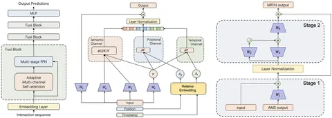

Сегодня разбираем статью от Huawei Noah’s Ark Lab об их новой рекомендательной модели FuXi-𝛼.
HSTU — одно из главных достижений индустрии за прошлый год. Среди важных архитектурных решений, которые вошли в эту модель, можно выделить отказ от Feed-Forward Network (FFN) блока и модификацию attention, куда, помимо прочего, добавили дополнительную компоненту для более явного учёта позиционной информации.
Авторы FuXi-𝛼 утверждают, что без FFN-блока очень сложно качественно учитывать неявное (implicit) взаимодействие между признаками. Более того, временную и позиционную информацию они считают настолько важной, что для корректной работы с ними недостаточно простой правки attention.
Основных изменений в модели FuXi-𝛼 два:
1. Модификация HSTU-attention. Его заменили на FuXi-блоки с Adaptive Multi-channel Self-attention (AMS). Они кодируют семантическую информацию о последовательностях стандартным образом, беря за основу HSTU-модификацию attention. А вот позиционная и темпоральная информация в новом блоке обрабатываются отдельно, в специальных обучаемых матрицах. Подробнее о том, как это работает, — на центральной схеме.
2. Возвращение FFN, от которого отказались в HSTU. При этом, добавили гейтинг и residual connections почти в каждый слой архитектуры, чтобы градиенты могли течь по любому маршруту (правая схема).
Для проверки получившейся модели авторы выбрали публичные датасеты MovieLens (1M и 20M), KuaiRand и собственный индустриальный датасет. FuXi-𝛼 показывала лучшие результаты по всем метрикам и хороший скейлинг как на small, так и на large моделях. Например, на KuaiRand NDCG@50 FuXi-𝛼-Large выше HSTU-large на 9%, а HitRate@50 — на 7%. А согласно онлайн-экспериментам в Huawei Music, внедрение FuXi-𝛼 позволило вырастить среднее время прослушивания на 5,1%.
@RecSysChannel
Разбор подготовил
